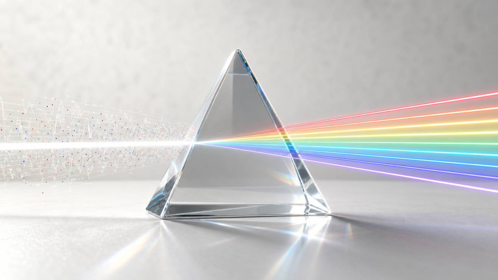

AI-powered feature discovery
Enable AI-assisted, automated feature discovery and validation from full-volume signal data.

Final Workshop POC Architecture
Chen Liu, Thomas Wang, Harris Liu, Haibin Zhang
Transform full-volume mixed realtime traffic into clean, attributable, aggregate signals for feature discovery and experimentation.
Wide attribution, aggregation schemas, and GMinor samples connect raw event streams to stable feature-quality signals.
Core schema and component story are ready for POC review.
SignalPrism focuses on making feature discovery faster, more automated, and easier to validate end to end.
Enable AI-assisted, automated feature discovery and validation from full-volume signal data.
Reduce the current timeline from feature idea, through platform and pipeline development, to offline simulation.